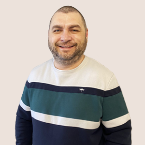

Моя біографія
Мене ім'я Віталій. Моє прізвище Бойчук
Мені 42 роки на наступному занятті буде.☺
Народився я в м. Миколаїв.
Де і зараз і проживаю. Але все дитинство я провів не в Миколаєві. Коли мені було 3 роки ми деякий час жили у
моїх бабусі та дідуся на заході України. Потім близько року я жив з батьками десь поблизу Києва... Я не
пам'ятаю, бо був малий. А так більшу частину свого життя я жив у невеликому селещі Ольшанське. Де закінчив
середнью школу та вступив до ВУЗу у місті Миколаїв.
Навчався на факультеті комп'ютерних технологій у Миколаївській філії Києво-Могилянської Академії.
Закінчив університет у 2004 році. І отримав диплом спеціаліста. Працював ще під час навчання і
після навчання мені не довелось шукати роботи, бо на момент закінчення вже працював кодером у компаніі
templatemonsters. Тоді верстка була на таблицях і ніхто не знав про окремі файли стілів і багато іншого, що
знають зараз.
Пізніше мені запропонували непогану посаду в цій же компанії і я перестав займатись версткою. Тому довгий
час мої знання верстки були в рамках верстки таблицями.
Через деякий час мені, коли з'явились div мене знову зацікавила верстка. Потрохи я деколи верстав але
виключно коли було час та натхнення.
Більш серйьозно я вирішив за'нятись версткою відносно недавно. Після того, як пройшли скорочення на роботі я
деякий час працював у таксі. Там я і зрозумів, що треба повертатись до верстки і розвиватись у цьому
направленні. А далі буде видно.
Моя історія
Моя родина це двоє синів(14 та 8 років) та кожана дружина(її вік не пишу☺).
Я люблю своє місто. Але є одне але... Моя сім'я приїхала в Миколаїв у кінці 70 років. А родом ми з
невеликого села Космирин, Бучачцького району. Тернопільської області. І все життя душею я був більше там ніж
в рідному місці.
Але війна все змінила.
З першоно дня війни я зрозумів, що насправді я дуже люблю свій край і не хочу нікуди їхати. Тому я лишився
на деякий час в Миколаєві, вивезши свою родину до села в Миколаївській області. Згодом я теж приїхав до них,
де зараз і знаходжусь.
Я не перестав любити захід України. Я взагалі люблю Україну і не хочу нікуди виїзжати з країни. Але я
зрозумів, що моє місце саме тут - на півдні України. В моєму Миколаєві.
Зараз я живу в селі. Займаюсь розробкою сайтів на WordPress. Але манить мене магія верстки.
Тому і прийшов на курс. Хочу актуалізувати і підняти свої знання. Систематизувати те, що знаю і набивати
руку саме в цьому. Щоб потім стати спеціалістом з верстки. А далі, можливо буду вивчати і React, Vue та
інше.
Але тут я обіцяв розказати про хоббі
- Рибалка;
- Розведення кролів;
- Кулінарія;
В світі є багато речей, які мене цікавлять і розібратись з якими мені цікаво. Але більш за все мені
подобається рибалка, кролі та кулінарія. Тільки зараз зрозумів, що всі хоббі пов'язані ☺ ☺ ☺.
До війни я у вільний час їздив зі своїми синами, а бувало і всією сім'єю на рибалку. У нас в місті є 2
річки, тому далеко їздити не доводилось. На рибалку у "дальні села" я їздив або сам або з старшим сином та
братом.
Зараз живу у селі. Тому не спробувати свою таємну мрію я не міг. Я розвів кролів. Зараз в мене близько 50
кролів різного віку. Кролі потребують багато уваги тому навіть трохи ветеринаром стаю. Вже знаю про їх
болячки і як їх лікувати.
До війни я готував досить часто. В якості відпочинку від роботи за комп'ютером я міг приготувати декілька
страв для сім'ї. Зараз готую рідко. Немає часу на це. Мене навіть запрошували колись до кастингу на
программу "Майстер Шеф". Але то було давно... Років 10 тому...